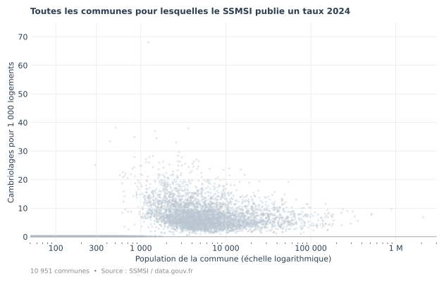
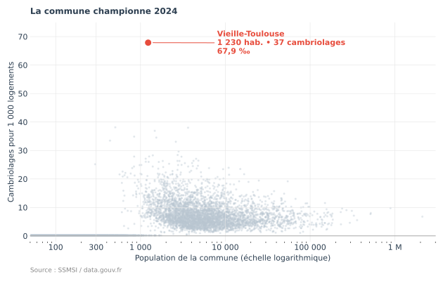
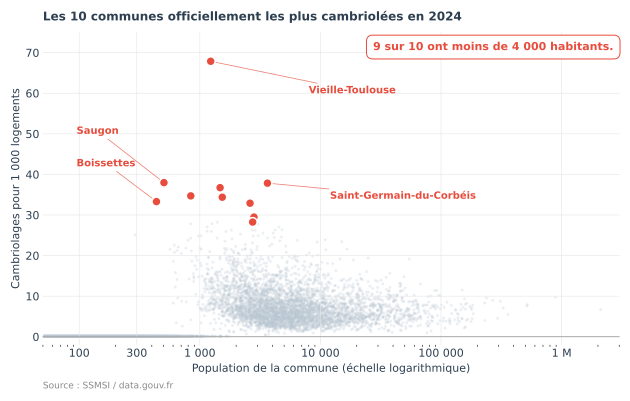
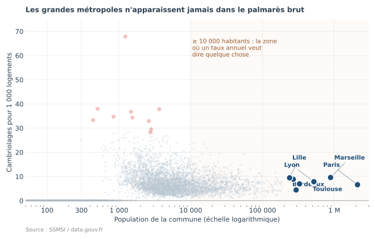
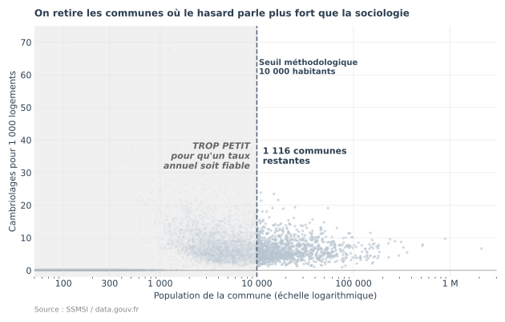
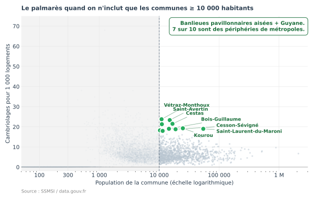
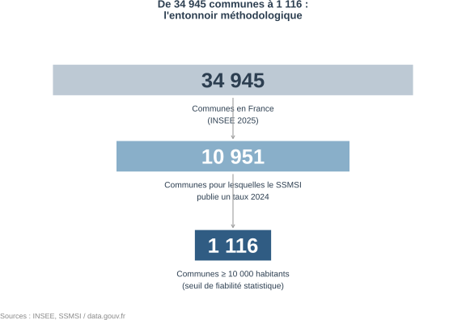
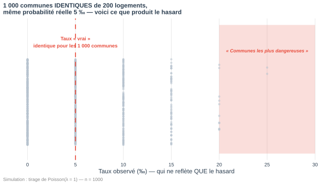
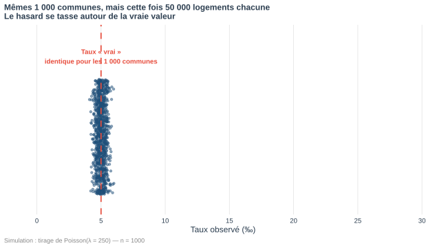
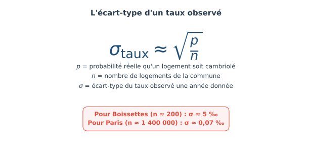

Le palmarès des « communes les plus cambriolées de France » à partir des données SSMSI 2024.
Vieille-Toulouse, Haute-Garonne. 1 230 habitants. 37 cambriolages enregistrés en 2024. Taux :
C'est le taux le plus élevé de France pour les communes dont le ministère de l'Intérieur publie le chiffre 2024. Si Paris connaissait le même taux, le nombre annuel de cambriolages dans la capitale serait d'environ 95 000. Le chiffre réel est de 9 235.
L'écart entre ces deux chiffres ne vient pas d'une différence de criminalité, mais d'une mécanique mathématique. Cette page la décompose.






10 951 communes. Chaque point représente une commune. Abscisse : population (échelle logarithmique). Ordonnée : nombre de cambriolages enregistrés en 2024 pour 1 000 logements.
1 230 habitants, 37 cambriolages. Taux : 67,9 ‰. C'est le point le plus haut du jeu de données.
Les dix communes au taux le plus élevé. 9 sur 10 ont moins de 4 000 habitants. Boissettes (Seine-et-Marne, 437 habitants) entre dans ce classement avec 7 cambriolages enregistrés dans l'année.
Paris : 6,6 ‰. Marseille : 9,6 ‰. Lyon : 7,9 ‰. Lille : 9,5 ‰. Toutes situées entre 6 et 10 ‰. Aucune n'apparaît dans le top 10 brut. La bande beige indique la zone des communes ≥ 10 000 habitants.
On retire les communes de moins de 10 000 habitants. Reste : 1 116 communes sur 10 951. Le seuil n'est pas mathématique. C'est un choix méthodologique inspiré des seuils utilisés dans le secteur sanitaire (300 accouchements/an pour les maternités, 50 interventions pour les centres de chirurgie cardiaque).
Les dix communes au taux le plus élevé parmi les 1 116 retenues. 7 sur 10 sont des banlieues pavillonnaires de métropoles régionales (Tours, Bordeaux, Rouen, Rennes, Metz). 2 sont en Guyane (Kourou, Saint-Laurent-du-Maroni).
Aucune n'apparaît dans le top 10 brut.
Trois faits suffisent à le décrire.

Le SSMSI ne diffuse pas tous les chiffres communaux. Pour préserver la confidentialité, les communes où le nombre de cambriolages est trop faible pour être anonymisable sont masquées (champ est_diffuse). 10 951 communes sont diffusées, sur 34 945 communes en France selon le Code officiel géographique INSEE 2025.
Il n'existe pas de seuil mathématique « vrai ». Les autorités sanitaires utilisent des seuils de fiabilité du même ordre : 300 accouchements par an minimum pour une maternité, 50 interventions par an pour un centre de chirurgie cardiaque. En dessous, les taux d'échec calculés sur trop peu de cas ne sont plus interprétables individuellement.
Le scatter ci-dessous est une simulation : 1 000 communes parfaitement identiques, observées sur une année.


Paramètres : 1 000 communes, 200 logements chacune, probabilité réelle qu'un logement soit cambriolé fixée à 5 ‰ (moyenne nationale). Pour chaque commune, on tire un nombre de cambriolages selon une loi de Poisson(λ = n × p) = Poisson(1).
Résultats observés :
Toutes ces communes sont identiques en réalité. La dispersion observée vient uniquement du tirage aléatoire.
Mêmes 1 000 communes, même probabilité réelle de 5 ‰, mais 50 000 logements chacune. Tous les taux observés tombent entre 4,2 et 6,0 ‰.
L'écart-type théorique passe de 5,0 ‰ à 0,32 ‰ entre les deux simulations.

L'écart-type du taux observé décroît en 1/√n. Pour Boissettes (n ≈ 200 logements), σ ≈ 5 ‰. Pour Paris (n ≈ 1 400 000 logements), σ ≈ 0,07 ‰. Le rapport est d'environ 70.
Conséquence directe du fait n° 3 : les communes qui apparaissent dans le top brut une année donnée ont une faible probabilité d'y figurer l'année suivante. Sur les 10 communes du top brut 2024, on peut prédire que la majorité aura disparu du top 100 en 2025.
Cette prédiction sera vérifiable et vérifiée ici en mai 2027, à la publication de la base SSMSI 2025.
Toutes les données viennent de la base communale SSMSI 2024 publiée sur data.gouv.fr en février 2026. L'analyse a été faite en R (Quarto) et est entièrement reproductible. Les scripts qui génèrent les graphiques sont également disponibles. Voir la note méthodologique en bas de page.
Source. Service Statistique Ministériel de la Sécurité Intérieure (SSMSI), base communale 2025 publiée en février 2026, indicateur « Cambriolages de logement », année 2024. Le taux est calculé par le SSMSI lui-même par 1 000 logements, à partir du recensement INSEE.
Périmètre. 10 951 communes diffusées sur 34 945 communes françaises (INSEE 2025). Les libellés et populations communales viennent du Code officiel géographique INSEE 2025.
Simulation. Tirages indépendants de Poisson(λ = n × p), avec n = nombre de logements, p = 0,005 (taux moyen national). Graine fixée à 42. Code source dans le dépôt GitHub.
Reproductibilité. Code (R + Quarto + scripts ggplot2) et données extraites : github.com/szaouati/illusion-petits-nombres. Code MIT, articles et graphiques CC BY 4.0.